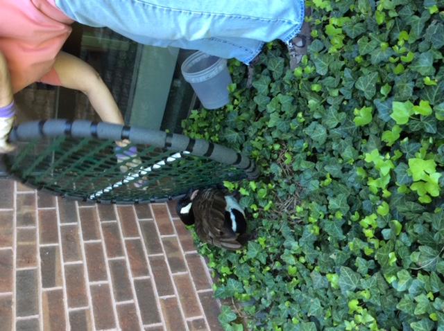
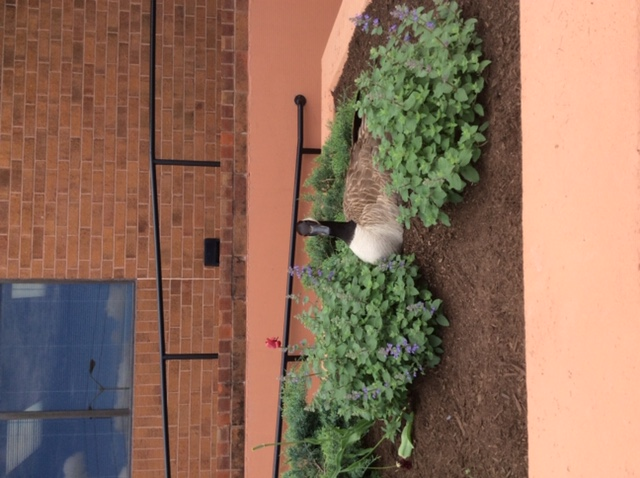
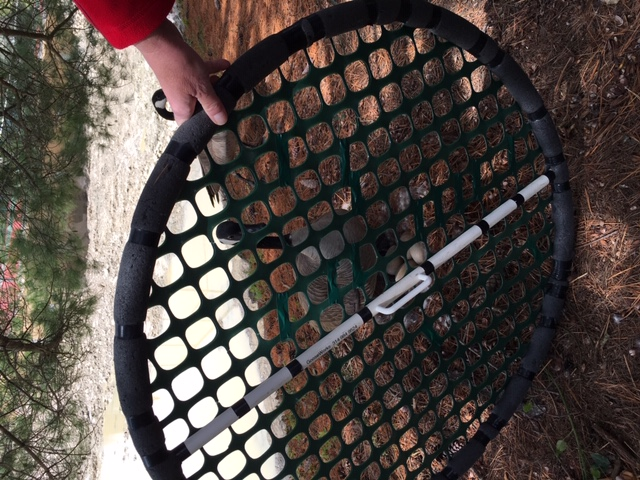
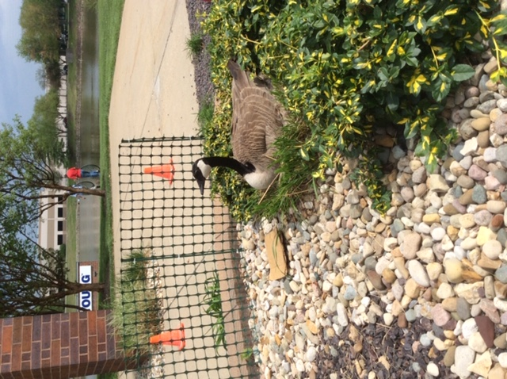
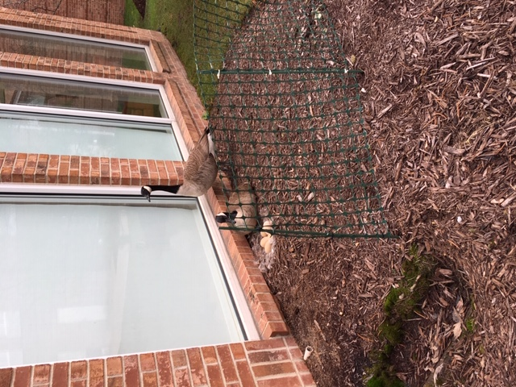
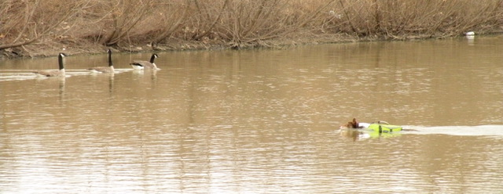
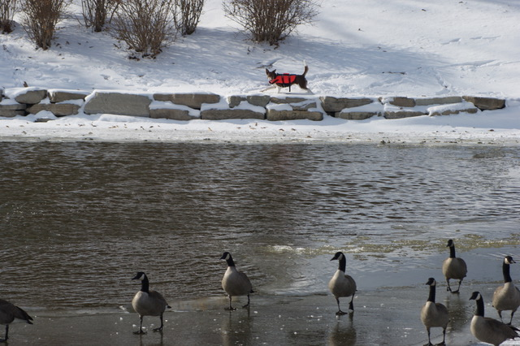
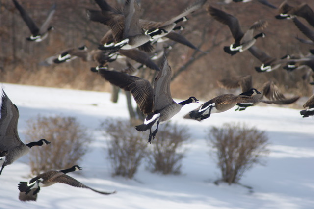
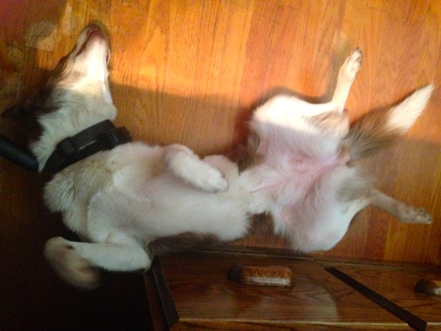
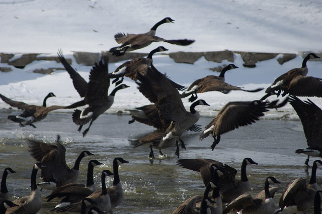

Resources
Frequently Asked Questions:
Q: Our homeowners association / business facility would like to humanely control the number of geese on our property. What can we do?   (image of egg addlers) 
A: Please leave your name, telephone number with area code, and a message with your concern on our voicemail (number to be added) A Friend of Geese volunteer will return your call and explain options, such as humane egg addling to manage the population. Friends of Geese can provide training for you or discuss other options.
Q: Are there ways I can change the natural habitat to discourage geese from my property? (insert photo of tall grasses around lake)
.jpeg)
.jpeg)
.jpeg)
.jpeg)
.jpeg)
A: Landscape modification is the number one way to lessen geese attraction to your property. Their first preference is Kentucky bluegrass, they dislike tall naturalized areas around water. They especially dislike fescue, particularly varieties that contain endophytic fungus. Unpalatable ground covers such as: common periwinkle, Japanese pachysandra, and English Ivy help discourage geese to stay off a property. Plant bushes, hedges, or shrubs to make the area appear unsafe to the geese. Canada Geese tend to avoid areas where predators are able to hide. There are many landscape professionals that now specialize in this kind of preventative landscape design. Geese want a gentle slope of short grass to access water. Planting tall water-loving plants along the shoreline or creating drop-offs using stone makes your property less appealing to geese.
Q: We have a goose poop problem over large areas of grounds. Is there a way to deal with it?
A: We discovered a product called Tow and Collect. These machines are easy to tow, using a standard ball and hitch coupling. It collects goose feces which can then be composted for its rich nutrient value if desired. https://towandfarm.com/us/
Q: If I have discovered a nest on my property where there is human traffic.
A: Goose deterrent fencing can temporarily be placed between the nesting area and the pedestrian walkway to give the geese a sense of security and prevent confrontation with the gander who is simply trying to protect his nest. (insert fenced area photos)
 Q: I see an injured goose. Who should I call?
A: If you find an injured goose contact: Illinois Vet Med Wildlife Clinic https://vetmed.illinois.edu/wildlife/contact-us/ (217) 244-1195
Q: Where do I get a permit to addle eggs on my property?
Canada Goose Nest and Egg Destruction PermitA: You can apply with the Illinois Department of Natural Resources for a permit. (Emilio can you make this a shorter url link?) Permit Form
Training for addling eggs: sign-up in the Contact Us section (image of shield)
Border Collie and trainers (insert images)
Salty Dog Group
Capt. Rib Bolten
(314) 302-8779 Cell/Text
https://www.facebook.com/Humane-Goose-Management-110887437123856
    Wild Goose Chase
(708) 529-3858
https://www.wildgoosechasers.com/
Goosinator
Join animal rights communities:
Humane Society of the United States
https://www.humanesociety.org/resources/what-do-about-canada-geese
Direct Action Everywhere or DXE
https://www.directactioneverywhere.com/
In Defense of Animals
Lisa Levinson
Sustainable Activism & Wild Animals Campaigns
lisa@idausa.org
(215) 620-2130
Friends of the Earth
1101 15th Street NW , 11th Floor
Washington, D.C. 20005
(202) 783-7400
Prairie Rivers Network
1605 South State Street, Suite 1
Champaign, IL, 61820
(217) 344-2371
info@prairierivers.org
The Nature Conservancy Illinois
400 N. Michigan Avenue, Suite S1100
Chicago, IL 60611
Phone: (312) 580-2100
Email: illinois@tnc.org
The Environmental Defense Fund
1116 South Walton Blvd, Ste 167
Bentonville, Arkansas 72712
Phone: (479) 845-3812
Media contact: Karley Kranich
(202) 572-3368 (office)
Email Karley
Natural Resources Defense Council
North Wacker Drive, Suite 1600
Chicago, IL 60606
(312) 651-7900
nrdcinfo@nrdc.org
Back to top!